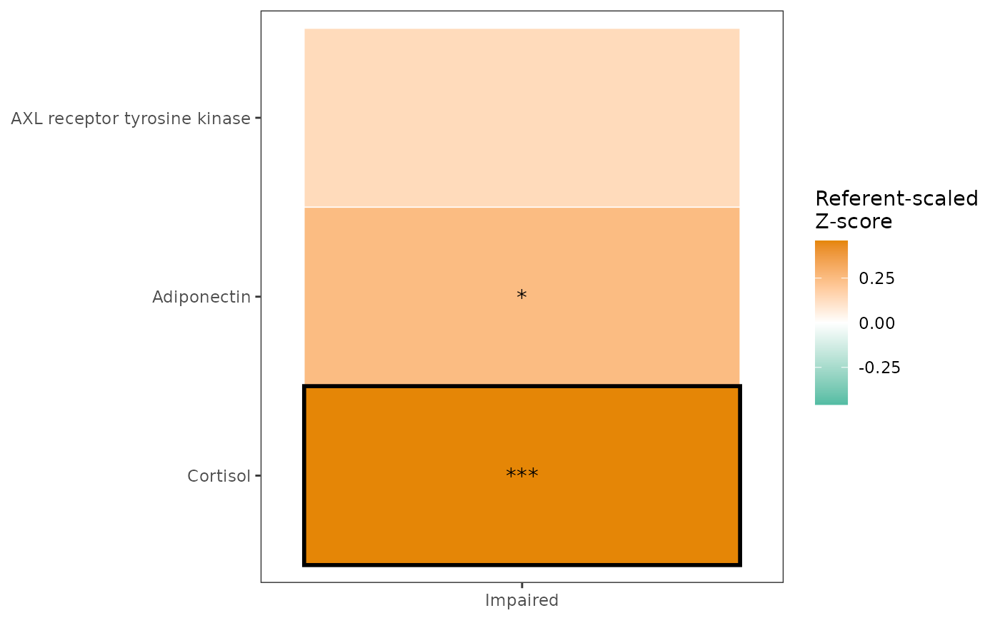

Build a heatmap of pairwise group contrasts against a required referent
group. Continuous outcomes are always transformed using the referent group
before modeling: Z-scores when Parametric = TRUE, and M-scores when
Parametric = FALSE.
Usage
MakePairwiseHeatmap(
data,
group_var,
variables,
Referent,
covariates = NULL,
Parametric = TRUE,
adjust_scope = c("per_group", "per_variable", "matrix", "none"),
p_adjust_method = c("fdr", "bonferroni", "holm", "none"),
star_p = c("raw", "adjusted", "none"),
adjusted_outline = TRUE,
adjusted_significance_threshold = 0.05,
adjusted_outline_color = "black",
adjusted_outline_linewidth = 1,
low_color = "#52BCA3FF",
mid_color = "white",
high_color = "#E58606FF",
fill_midpoint = 0,
fill_limits = NULL,
fill_oob = scales::squish,
cluster_rows = FALSE,
cluster_columns = FALSE,
show_caption = FALSE,
x_axis_text_angle = 0,
return_models = FALSE,
star_color = "black",
star_size = 4
)Arguments
- data
A data frame.
- group_var
Character scalar naming the grouping variable.
- variables
Character vector of continuous outcome variables.
- Referent
Character scalar naming the referent level of
group_var.- covariates
Optional character vector of covariates.
- Parametric
Logical. If
TRUE, outcomes are Z-scored before modeling. IfFALSE, outcomes are M-scored and HC3 robust covariance is used for estimated marginal mean contrasts.- adjust_scope
Multiple-comparison correction scope.
"per_group"adjusts across variables within each group-vs-referent contrast;"per_variable"adjusts across group contrasts within each variable;"matrix"adjusts across all displayed cells;"none"applies no correction.- p_adjust_method
Method passed to
stats::p.adjust(). Use"none"for no correction.- star_p
Which p-values should drive cell stars: raw, adjusted, or none.
- adjusted_outline
Logical; outline cells significant after adjustment.
- adjusted_significance_threshold
Threshold for adjusted-significant outlines.
- adjusted_outline_color, adjusted_outline_linewidth
Appearance of the adjusted-significant outline.
- low_color, mid_color, high_color
Diverging heatmap colors.
- fill_midpoint
Numeric midpoint for the fill scale.
- fill_limits
Optional numeric vector of length 2. If
NULL, symmetric limits are computed from the observed estimated mean differences.- fill_oob
Out-of-bounds handler for the fill scale.
- cluster_rows, cluster_columns
Logical; optionally cluster rows or columns based on estimated mean differences.
- show_caption
Logical; add an explanatory caption to the plot.
- x_axis_text_angle
Numeric angle for x-axis labels. Defaults to
0.- return_models
Logical; include fitted model objects in the return.
- star_color, star_size
Appearance of p-value stars.
Value
An object of class "SciDataReportRPairwiseHeatmap" with Plot,
Results, Models, Settings, ScalingParameters, and Warnings.
Results includes readable audit columns such as Test, Contrast,
Adjustment, and ModelFormula.
Details
Each cell is an estimated marginal mean contrast from the model
referent_scaled_outcome ~ group_var + covariates, computed as
Group - Referent. Scaling parameters are estimated in the referent group
and projected onto the full dataset before modeling. With the defaults,
adjusted p-values use FDR correction within each group-vs-referent contrast
across variables.
Examples
data(SampleData)
data(SampleVariableTypes)
Labelled <- RevalueData(SampleData, SampleVariableTypes)$RevaluedData
res <- MakePairwiseHeatmap(
data = Labelled,
group_var = "Diagnosis",
variables = c("AXL", "Adiponectin", "Cortisol"),
Referent = levels(Labelled$Diagnosis)[1]
)
res$Plot
